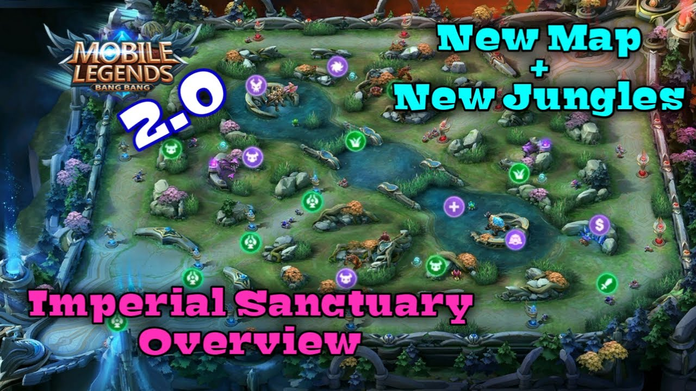
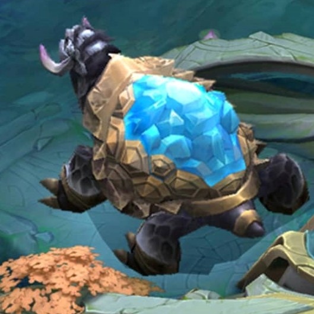

Jungle

The Jungle refers to any area of the map that is not a lane or part of either team's base, including the rival that divides it. Jungles rely on killing neutral mobs in the jungle to keep up with their laning teammates in terms of gold and experience.
Jungles are in between the three lanes. These areas weave their way into the map so you can cut through to lanes without having to go back and around map areas.
Jungle creeps are mirrored on both sides, and both teams can access the same number of camps on their side of the map. As mentioned, the extent to which a team has map control fluctuates depending on the objectives they secure.
Jungles have monsters scattered in those areas and give you a faster way of gaining gold and exp for your hero. You can spend the waiting period for enemy minions to kill one of the jungle monsters. Just take note that more powerful monsters are spawned as the match goes on. They do, however, give you better and more powerful bonuses. If you're lucky, you may ever get a bonus specific for your hero's health, damage and ever defense.
In a standard 5-on-5 game of Mobile Legends, 4 players on a team will be Laners, and 1 player will be a designated Jungler. Jungle Creeps exclusively showcase in Imperial Sanctuary Map. Jungle creeps are very strong in early game. The team shares the jungle from the top and bottom areas. Some heroes are very fasst at clearing jungles, especially Assassin and Marksman due to having taking the retribution battle spell and giving them buff in order to have brust damage.
Take note that specific characters are better suited for jungle areas than others and even have gear builds specific for jungling so be sure that your character is well-suited for the area before charging in for the monster kill.
The purpose of the jungle is to gain the buffs such as Gold, Healing, and Blue Buff, etc. The monsters are scattered throughout the jungle area in order for you to kill in return for those loots and rewards. At the beginning of the match, the monsters and the Cyclone Eye are spawned at different periods. There are decent heroes that are better for jungling than other heroes with the help of jungling gear build or just jungling item. Creeps and Battlefield Field features are constituent of the Jungle. Creeps are classified into 3: Common, Elite, and Legend. Common Creeps give a medium buff such as Healing Buff, and Gold Buff. Elite Creeps give a role buff that increases the heroes' attributes and has a special innate. Legend Creeps have big HP bar, and then always spawn in the river.
Monster Respawns and Buffs
There are different types of monsters in Mobile Legends. Each of these monsters gives different amounts of gold, experience, and unique in-game buffs. It is vital for you to know the basics and advancements about these jungle monsters if you want to be a successful Jungler.
Creeps
Common Creeps
There are numerous small monsters or creeps, scattered throughout the jungle. These are really easy to kill and do not give out any buffs and are naturally, good for gold and experience only. These monsters spawn after 1 minute and you can clear these camps often, to obtain more gold and experience. If you are killing these monsters, when the enemy push is farther away from your tower, you will get a bonus experience and gold.
Lithowanderer
The Lithowanderer is considered only as a common creep because it won't attack you but movess only at the designated path. It can be found in the bush near the river in each half of the middle lane. It will appear in first 35 s. When it was killed, it will become a Walkie Grass and follow the killer for 120s. The Walkie Grass helps the allied target within the 6-unit range to restore 2% HP and Mana every second. To minions, restore 3% per second. It is very helpful for team fights.
Story
Due to the divine power of the King of Light in the Imperial Sanctuary, it seems that everything could have souls. Around the riverway, there lives a mysterious and mild creature, named Lithowanderer. However, because the Walkie Grass that is living on its back has a magic power of healing, the Lithowanderer is often brought into the battlefields of war.
Rockursa
Rockursa will appear within 30s after the match starts. The ability of the Rockursa is that it can launch an attack every 1s, dealing (+100% Total Physical Attack) Physical Damage. Rockursa is like a brave bear with wooden spiky vambrace. He has a vase of honey with knives beside him.
Rockursa doesn't give any buff, aside from little and a Healing Buff.
This is also essential to clear from time to time. Players that usually clear jungle camp once the push is still far away from his tower generate more gold than a player that stays on his lane.
Crab
There are 2 different types of crabs in early game. In first 45 s, it will show only little crab and will refresh within 15s. The normal size of crab will appear after 90s later and needs to refresh for 120 s.
Crab gives you a Gold Buff which will provide an extra gold every second in a limited time. Little Crab will appear first and then the crab. The developers added the Crab in previous versions in order to give players more impetus to compete for jungle control, as well as to reward teamwork. Due to the crab's position being far away from where players usually fight, he soon became largely ignored. In the new map they have given the crab a new life, he will now be more closely situated to the top and bottom lanes, they hope this will break up the monotony of the top and bottom laning phases, allowing players use the crab to snowball or chase a lead.
Crammer
Crammer will appear within 40s. It is a kind of insert that has sharp and deadly fangs, a crimson exoskeleton, and neon green eye. Its ability is that it can launches an attack every 1s, dealing (+100% Total Physical attack) Physical Damage. When Crammer is killed, its carcass will turn into a Little Crammer that is weaker than the Crammer, that can survive, survive up to 15s. It doesn't give any buff, aside from little gold and a Healing Buff. Of course, this is also essential to clear from time to time. Players that usually clear jungle camp once the push is still far away from his tower generate more gold than a player that stays on his lane.
Story
In the Imperial Sanctuary, the Crammer is considered as the lowest class of creatures. Though in their thought, they have sharp and deadly fangs, in the warrior's view, the Crammer is just a kind of insect and their fangs are just the basic materials for making some tools.
Scaled Lizard
Scaled Lizard will also appear within 40s. It will refresh in 70s after starting the match. Scaled Lizard has a curly tail and purple head crest. His tongue is used as a weapon. It donesn't give any buff, aside from little gold and a Healing Buff. Of course, this is also essential to clear from time to time. Players that usually clear jungle camp once the push is still far away from his tower generate more gold than a player that stays on his lane. He uses his tongue as a weapon to damage his enemy.
Story
It is said that when the Imperial Sanctuary was initially found, there were a lot of creatures living on this land. They looked completely different and possess the most powerful abilities. They were scattered one was the Scaled Lizard. They lived among the bushes and specialized in ganking enemies, making them the most frequent creature warriors to come across.
Elite Creeps
Elite jungle creeps are a step up from common creatures and hand out the best buffs in the game, often referred to as “blue buff” and “red buff,” or “purple buff” and “orange buff.” These monsters spawn after 30 seconds of the game and 2 minutes after they are slain. On most circumstances, these creeps can be killed, by a solo player. These monsters grant the killer with exceptional in-game buffs, that are classified into red and blue ones and have their own specialties.
Fiend
It is also a jungle buff monster. It will show up after 30 seconds. It is located on the right side of the map alomst on the bottom lane near the second turret. After killing, it gives medium money than the duo monsters (Serpent) but it will also give a Red Buff. In the next 120s, each time the killer attacks the enemy Heroes, the Soul of Lava will attack them once, dealing extra damage and slowing them for 1s based on the killer's Role TO Assassin / Fighter / Tank, deals 50 (+50% Total Physical ATK) True Damage and slows the targets by 80%. To Marksman / Mage / Support, deals 50 (+50% Total Physical ATK) True Damage and slows the target by 30%. The attack has a CD of 3s.
Tips
Fiend is also known as Reaper(Western Expanse) and has a spawn time of 45 seconds and a further cooldown of 2 minutes. Fiend is comparatively, easy to kill, unlike the turtle and you must kill the Fiend, as soon as you see one. By killing a Fiend, you not only obtain gold and experience but you also get a buff that boosts your physical and magical damage by 10%. So, it is advised, you should never miss the opportunity to score some gold, experience, and buffs, from the Fiend.
Story
There are a lot of creatures in the Imperial Sanctuary. Fiend, being the most aggressive creatures among them, has been resting beside the Temple of Heroes. Its powerful strength is its way of protecting itself. Moreover, the most appalling thing about it is that it possesses the power of genetic mutation so that it could adjust its strength according to the ability of its components. It is said that the warriors could regain the gene of its strength after defeating it.
Serpent
Serpent are the duo monsters in the jungle, these duo jungle monster will give more gold than the smaller monsters and will give a Blue Buff. They will appear within 30 seconds in the early game. They are located in the left side of the jungle area.In the next 120s, reduces all skill's CD by 10%, Mana Cost by 40%, Energy Cost by 25%. When killing an enemy unit, restores HP based on the type of this unit. If the unit is a minion, restores 3%. If the unit is a Hero, restores 8%. If the unit is a Creep, restores 12%.
Story
In the Imperial Sanctuary, any creature could be a lethal threat. Take Serpent, the most mysterious and sneaky one, as an example - for a long time, Serpents have been the challengers' favorite. Roaming beside the river, Serpents love to attack the intrudes who break into their territory. They often go in an overwhelming quantity, thus, making with challengers struggle. Anyone who has the courage and strength to beat a Serpent will be rewarded with endless strength, which can be obtained from its blood.
Tips
Serpent is also known as Spinner Chaser(Western Expanse) and Statued Shocker(Celestial Palace) and has a spawn time of 45 seconds, with a further cooldown of 2 minutes. Also, it is relatively easy to kill, unlike the Turtle. However, you must slay the smaller one first, as it's faster in attack speed but low on HP. Killing this duo will give you buffs. These buffs consist of 20% cooldown reduction, 50% reduced mana consumption from your skills, and a plus 20% energy consumption bonus. These buffs are really good for heroes, who need to spam their skills.
Legend Creeps
Legendary jungle monsters can be best described as utility. They are comparatively, more difficult to kill. However, they grant the entire team with gold and EXP boosts, along with other useful grants.

Cryoturtle
The Cryoturtle spawns within 3 minutes in the game time. It will reward all teammates with gold and EXP. It gives Turtle Buff to the last hitter after killing it. Its basic attack is ranged only and it shoots the sparkling ball and it deals short damage. Spawn location and countdown for Turtle are displayed 120 seconds before it spawns.
Story
Cryoturtles are the slowest energy creatures of the Imperial Sanctuary. As it's recorded in the Warrior's Scripts, Cryoturtles are covered with numerous priceless treasures, including gold and crystals. The most amazing thing about it is that it has signed a mystic contract with the Lord of the Temple of Heroes. The warriors believed that the Cryoturtles overlook the Temple of Heroes from the other side of the lake, which meant they were interlinked in some way. To be specific, they believed that Cryoturtles are the critical keys to awaken the Lord of the Temple.
Tips
Turtle gives you a decent amount of gold and experience and it is recommended to take it down, early on in the game, as everyone is much dependent on items at the start. As mentioned above, you and your team can earn a bunch of gold and EXP from the turtle. However, never attempt to take on the Turtle, alone. It is not that easy, and you should always work as a team or if you even see a teammate fighting a Turtle, you should always help them out and secure the kill. Turtle has a respawning time of 3 minutes and you should never miss a chance, to slay the Turtle.
Sanctuary Lord
Sanctuary Lord spawns within 9 minutes of the game starting. He will reward the player with a good amount of Gold and EXP, not only the players but also for the minions. Once defeated, Lord will respawn and fight alongside the team that defeated him. Spawn location and countdown for Lord are displayed 120 seconds before he spawns. Lord spawns every 4 minutes in a random location after he is killed for the first time. He has more attack skills than The Turtle, with his basic attack using his cudgel to hit the enemies, and it includes a bit of AoE where the direct impact isn't imminent.
History
His old appearance is similar to Tigreal's Dark Guardian skin but with a dark helmet on. With its new appearance, lord now has a more giant lava-theme devil and what seems to be steel or iron armor, lava horns on its head, and yellow eyes. it's shown wearing armor and its chest has flowing lava on it. Lord does not seem to have armor on the lower parts of his arms. His current ppearance is very similar to Hylos' model, Centaur.
Story
Legend has it that there is a mysterious creature hidden in the ancient Imperial Sanctuary, symbolizing power, victory, and destruction. The Lord of the Temple of Heroes, possesses the supreme power to endow everything on the battlefield with strength and make himself literally immortal. No one can be compared to him and even the bravest of fighters could only seek shelter from him, for a fairly short period. For a long time, the Lord of the Temple of Heroes posted here. Once awaken, he would be the most steadfast defense within the Imperial Sanctuary
Buffs
I will explain about the icons that you will see after you killed creeps.
The monster indicated by green dot in mini-map. The one who last hit it will recover a great amount of HP plus some gold and experience to all the nearby allies. They have low HP and low damage. They respawn within 1 min after die.Restores 5% Mana and 350 HP in 2 seconds.
- Scaled Lizard
- Crammer
- Rockursa
- Little Serpent
Helps the allied target within the 6-unit range to restore Max HP and Max Mana, up to 1% per second to Heroes and 3% per second to minions. The Walkie Grass will follow the killer.
The killer gains a Gold Buff that will last of 30 seconds and provide 100 extra Gold. On Little Crab, the killer will gain 30 extra Gold in 9 seconds.
Aka Orange Buff. Each time the killer attacks the enemy Heroes, the Soul of Lava will attack them once, dealing extra damage and slowing them for 1 second based on the killer's Role. The attack has a CD of 3 seconds.
It deals 50 (+20% Total Physical Attack) (+30 × Attack Speed) True Damage and slows the target by 60%.
It deals 50 (+30% Total Physical Attack) (+50 × Attack Speed) True Damage and slows the target by 20%.
Aka Purple Buff. Reduces all skill's CD by 10%, Mana Cost by 40%, Energy Cost by 25%. When killing an enemy unit, restores HP based on the type of this unit:
The killer gains a shield that can absorb 400 (+40 each Hero Level) Damage when the killer doesn't take any damage in 5 seconds. The shield can increase the killer's Physical Attack by 20 (+2 each Hero Level), Magic Power by 25 (+4 each Hero Level).
Lord is the most powerful of all monsters any your team must tackle it, only in the late game. It is recommended that the Lord must be slain when your team is powerful enough, otherwise, Lord will kill almost every one of your team member, due to its sheer strength. When your team finally manages to slay Lord, it will give you additional experience points and also add gold. Additionally, it will also start to fight, for your side. However, the Lord becomes weak if faced with multiple minions and enemy heroes, so you must clear a path and push it towards the opposition turrets. Never attempt to slay the Lord, alone, especially right when it spawns after 9 minutes, in-match time, because not only will it be suicide, but also, the turrets will most-likely kill it, before it can deal massive amounts of damage. Instead, make sure at least 2 turrets are gone on either lane before you summon Lord to fight alongside your team. Additionally, every time the Lord spawns, it is more powerful than before. So it is wise, to protect it from enemies, as your team tries to slay it. Otherwise, wait for the enemy to tackle it and then move in for the last hit, and secure the kill. Once the Lord is slain, there is a 4-minute cooldown, before it spawns again.
Summary
Jungling is a reference to when you leave the lane, stay in the jungle to level up and help your teammates by doing occasional surprise attacks, during group fights. The basic idea here is that your team will be relying on you for game ganking. You should always be on the move, clearing jungle camps after camp and looking for opportunities to gank. Constantly check the minimap and try to camp at the lane nearest to the current objective to secure it more easily.